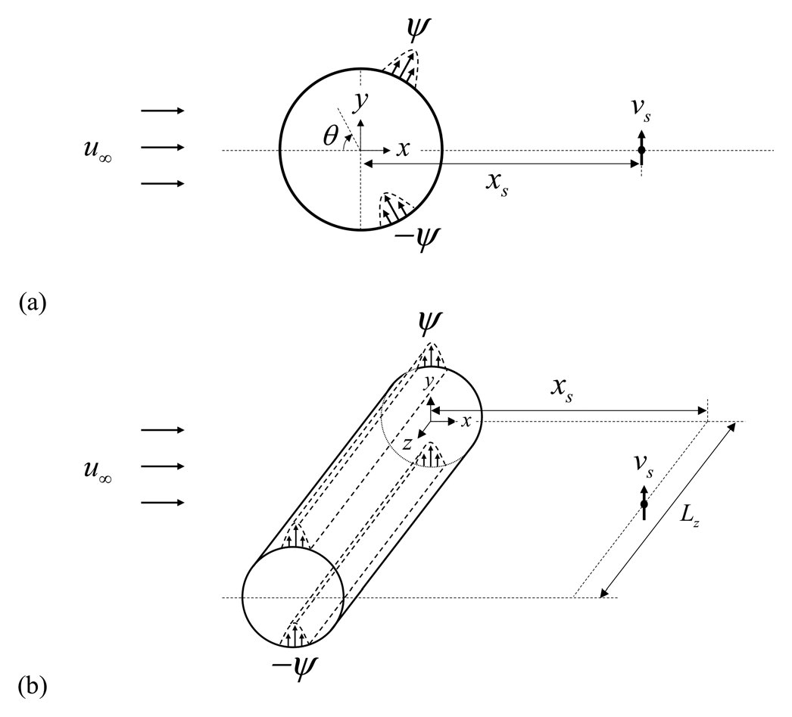
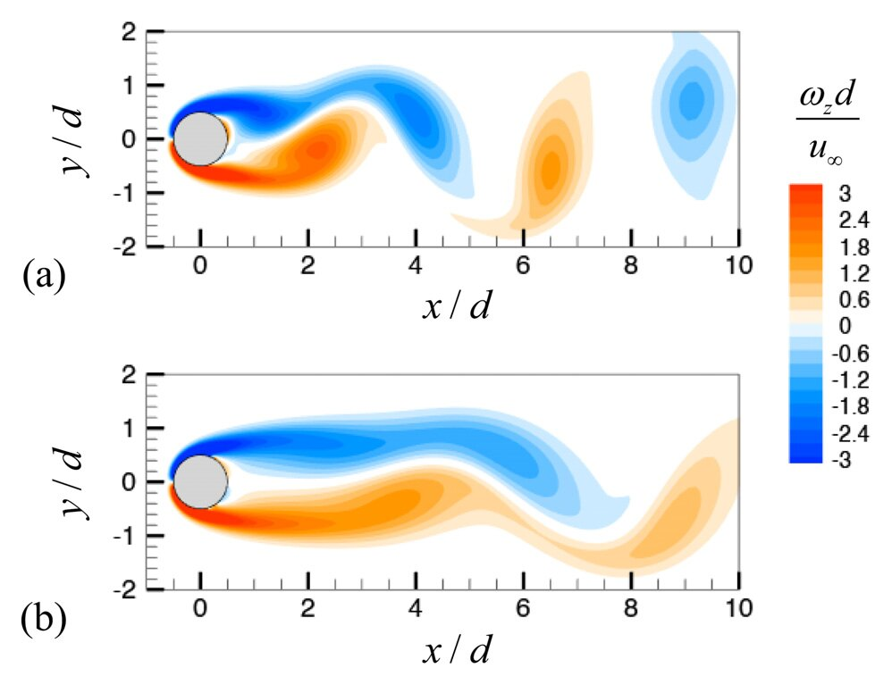
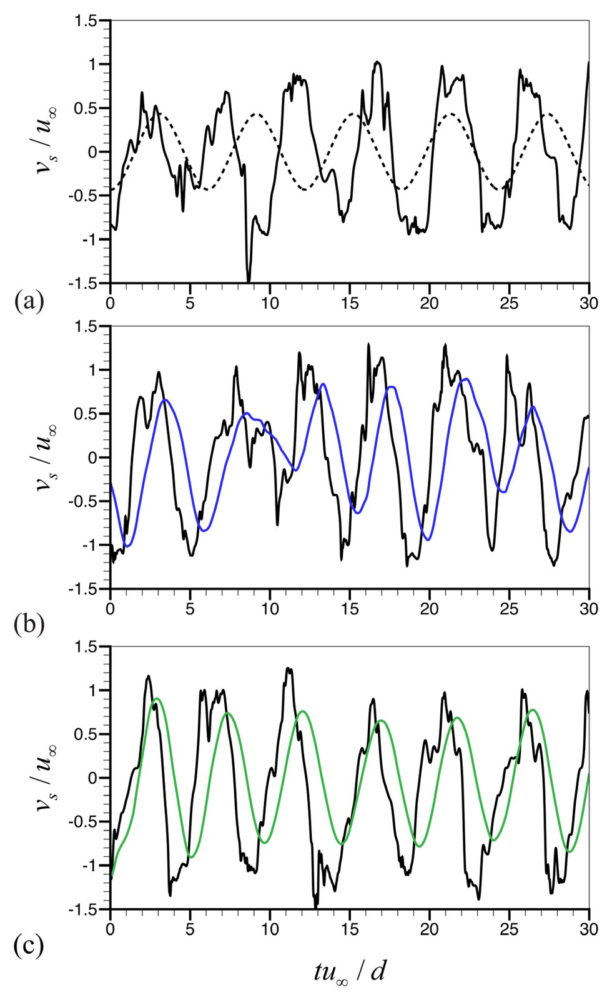
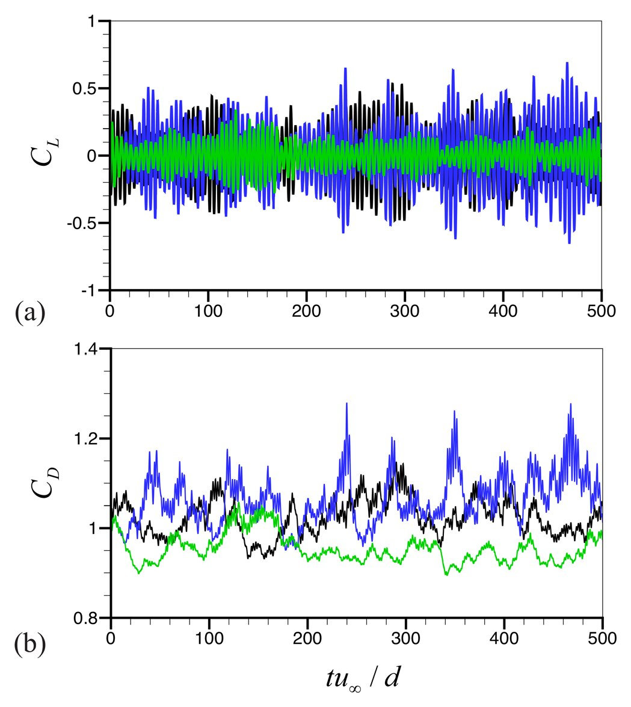
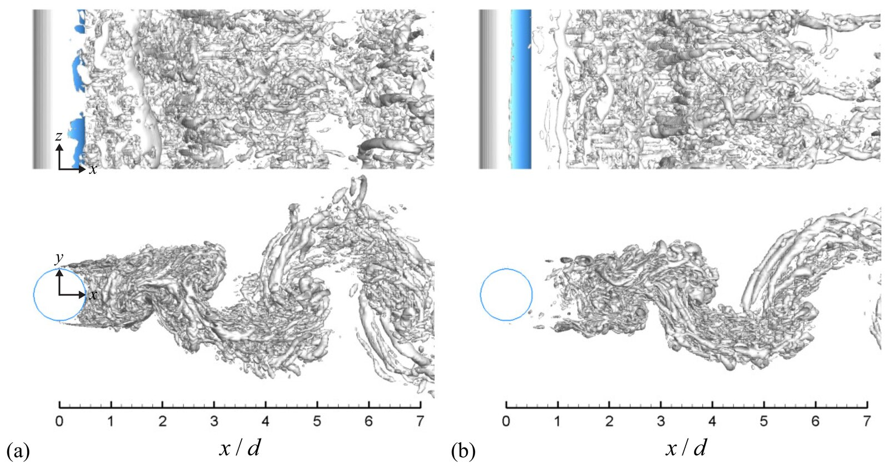
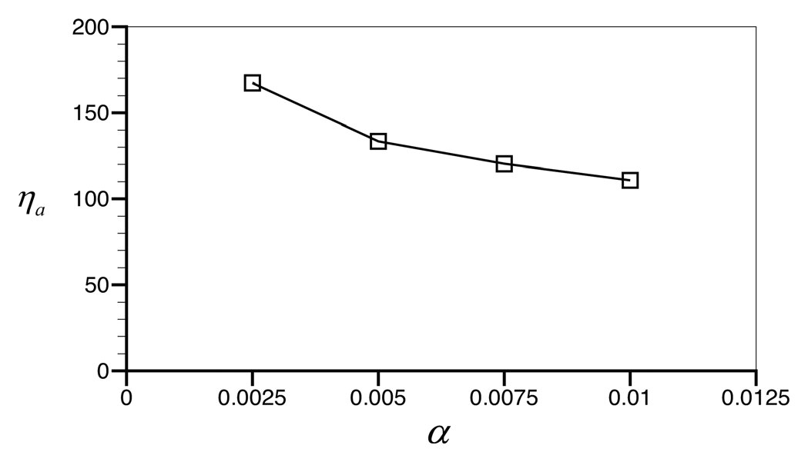

문제 배경
다수의 능동 제어 기법은 높은 제어 성능을 보이지만, 복잡한 센서 구성이나 큰 제어 입력 동력을 요구하여 실제 적용성이 제한된다. 뭉툭한 물체(bluff body) 주위 유동 제어에서는 가진에 필요한 동력이 항력 감소로 절감되는 동력을 상회할 수 있다.
본 연구는 실용적인 센서 구성과 단순한 제어 법칙을 유지하면서 유의미한 제어 성능을 얻을 수 있는지를 검토하였다.
본 연구는 단순한 제어 법칙과 소수의 센서로 구성된 실용적 되먹임 제어의 성능을 검토하였다. 후류 중심선에서 측정한 수직 방향(transverse) 센싱 속도에 시간 평균과 스팬 방향 평균을 적용하고, 그 값에 비례하여 실린더 표면에서 분사/흡입(blowing/suction) 가진을 가하는 비례 되먹임 제어(proportional feedback control)를 Re = 3900 원형 실린더 주위 난류 유동에 적용하였다. 자유 유동 속도의 1% 미만인 가진 속도로 평균 항력과 양력 섭동(lift fluctuations)을 함께 감소시켰다.

센싱 위치 xs, 시간 평균 구간 Ta, 비례 게인 α에 따른 제어 거동을 개념 모델로 나타낸다. 유동은 개념적 재현이며, 수치는 논문 결과를 따른다.

보텍스 쉐딩의 진폭은 Stuart–Landau oscillator로 모델링하였으며, 센싱 위치·시간 평균·비례 게인이 제어 효과에 미치는 경향을 정성적으로 나타낸다. 수치는 모두 논문 값이다. 출처: J. Yun and J. Lee, Phys. Fluids 34, 095133 (2022).
유동 제어의 실용성은 제어 성능뿐 아니라 센서 구성의 단순성과 제어 입력 동력을 함께 고려하여 평가해야 한다.
다수의 능동 제어 기법은 높은 제어 성능을 보이지만, 복잡한 센서 구성이나 큰 제어 입력 동력을 요구하여 실제 적용성이 제한된다. 뭉툭한 물체(bluff body) 주위 유동 제어에서는 가진에 필요한 동력이 항력 감소로 절감되는 동력을 상회할 수 있다.
본 연구는 실용적인 센서 구성과 단순한 제어 법칙을 유지하면서 유의미한 제어 성능을 얻을 수 있는지를 검토하였다.
후류 중심선의 수직 방향 속도를 센싱 속도로 사용하되, 순간값 대신 시간 평균(Ta)과 스팬 방향 평균을 적용한 값에 비례하여 상·하면 슬롯에서 역위상의 분사/흡입 가진을 가한다: ψm = α·e(t).
Re = 3900 LES 결과 영상(박사학위 논문 심사 발표 자료). 동작 줄이기 설정에서는 자동 재생되지 않는다.




그림: J. Yun and J. Lee, Phys. Fluids 34, 095133 (2022). Reproduced with the permission of AIP Publishing.
센싱 위치와 센싱 속도의 평균 처리를 적절히 선정하면, 단순한 비례 제어로도 높은 제어 성능과 효율을 얻을 수 있다.
본 결과는 높은 제어 성능이 반드시 복잡한 신경망 제어기를 필요로 하지 않음을 보여 준다. 적절한 센싱 위치와 평균 센싱 속도만으로 후류 구조를 안정화할 수 있으며, 가진에 필요한 동력이 작아 절감 동력 대비 제어 효율이 높다. 순간 센싱 속도를 그대로 사용하면 동일한 게인에서도 섭동이 증가할 수 있으므로, 평균 센싱이 제어 성공의 핵심 요소이다.
또한 본 비례 제어는 이후 평면 대칭성 보장 신경망(FCNN-PS) 기반 제어의 학습 대상이자 비교 기준이 된다.